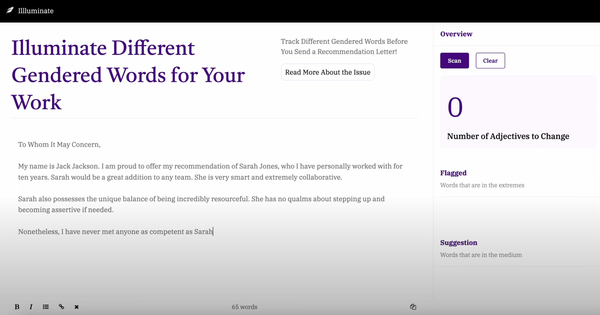
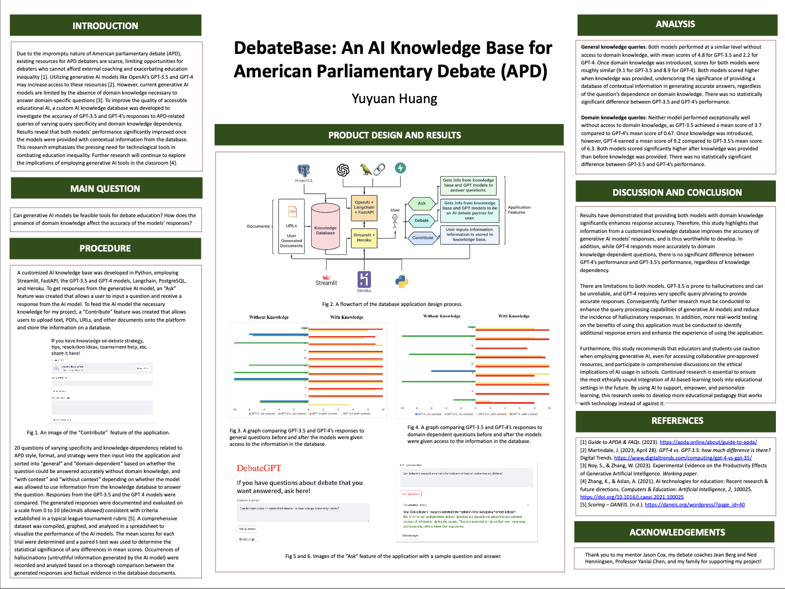
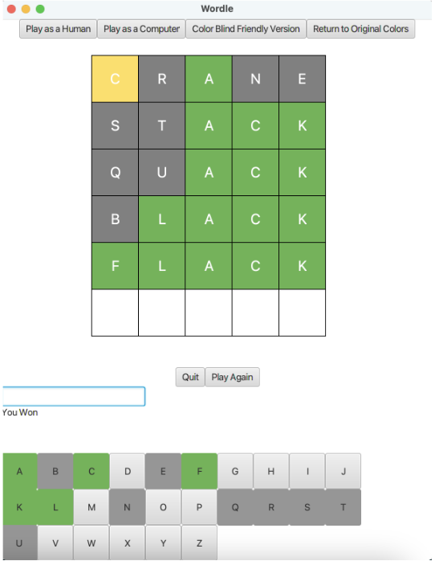
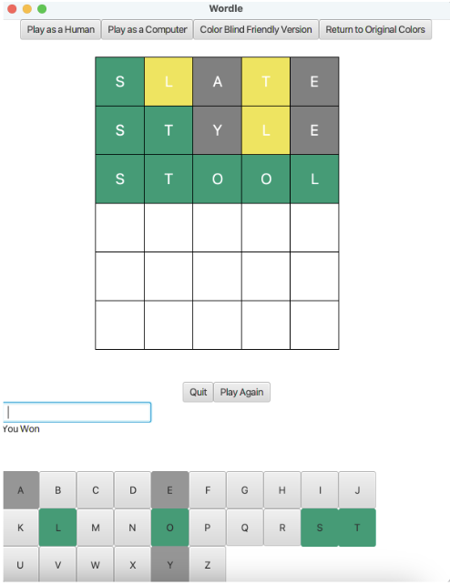

Developed a real-time gaze-tracking data visualization tool for
Medtronic's HUGO surgical robot display using QML, C++, and Python used
daily by 200+ engineers in the Boston office, boosting system testing
efficiency by 20% as a summer 2025 SWE intern. Integrated
performance-critical UI elements with DDS communication network and
implemented hardware-in-the-loop and software-in-the-loop testing to
ensure stable operation under surgical conditions. Figma designs
available upon request.
Illuminate

Engineered an inclusive language full-stack web tool utilizing spaCy NLP
to promote gender-neutral expression in writing, promoting thoughtful,
bias-aware communication. Showcased at Hack@Brown 2025 and received
positive feedback from 10+ users.
DebateBase

Developed a full-stack user-centered educational web platform to support
30+ underrepresented youth debaters in the Boston area with accessible
AI-driven learning tools, advancing equity in public speaking education.
Employed PostgreSQL for database management, FastAPI and REST APIs for
backend development, and Streamlit for frontend development. Utilized
OpenAI API, Langchain, and Hugging Face models to analyze domain-specific
knowledge and generate targeted feedback.
Wordle


Built an interactive JavaFX-based version of Wordle with both human and
computer-playable modes, emphasizing intuitive, engaging, and accessible
UI elements. Used a binary search tree to enable fast and accurate word
validation, ensuring smooth gameplay and responsive interaction.
Source code available upon request.